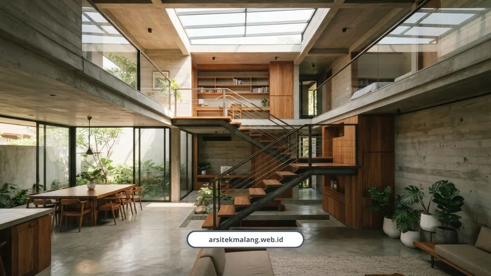

Ringkasan Inti
- Desain split level membagi elevasi lantai per setengah tingkat yang efisien menyiasati kontur lahan miring dan keterbatasan tapak di Malang Raya.
- Menghemat biaya galian dan urukan (cut and fill) tanah secara signifikan karena denah beradaptasi dengan kemiringan tanah alami.
- Jumlah anak tangga per transisi level jauh lebih pendek (sekitar 11 anak tangga) dibanding rumah dua lantai biasa (rata-rata 24 anak tangga).
- Keberadaan void tengah mengoptimalkan pencahayaan alami, cross ventilation, serta stack effect sejuk khas iklim pegunungan Malang.
Daftar Isi Artikel
- Apa Sebenarnya yang Dimaksud Desain Split Level?
- Apa Saja Keuntungan Split Level Dibanding Rumah Konvensional?
- Apakah Split Level Punya Kekurangan?
- Material dan Fasad Seperti Apa yang Cocok untuk Iklim Malang?
- Berapa Kisaran Biaya Membangun Rumah Split Level di Malang?
- Aturan Apa yang Perlu Diperhatikan Soal Mezzanine dan Legalitas?
- FAQ (Pertanyaan Sering Diajukan)
Desain split level adalah metode membagi ketinggian lantai rumah per setengah tingkat, bukan satu lantai penuh, yang paling pas untuk lahan berkontur maupun lahan sempit di Malang Raya. Konsep ini bikin ruang terasa lapang dan menghemat biaya galian tanah tanpa mengorbankan estetika.
Apa Sebenarnya yang Dimaksud Desain Split Level?
Split level bukan rumah dua lantai biasa yang tinggal ditumpuk. Konsepnya membagi perbedaan ketinggian lantai sebesar setengah tingkat, dan setiap tingkatan tetap terhubung secara visual satu sama lain.
Pendekatan ini sangat cocok untuk kondisi geografis Malang Raya yang bervariasi, mulai dari area berbukit di Batu dan Malang Barat sampai kawasan perkotaan padat seperti Lowokwaru, Sawojajar, dan Tlogomas.

Apa Saja Keuntungan Split Level Dibanding Rumah Konvensional?
Ada beberapa keunggulan yang bikin split level jadi pilihan masuk akal, baik untuk lahan miring maupun lahan sempit perkotaan:
- Menghemat biaya cut and fill karena struktur mengikuti kontur alami tanah, bukan meratakannya.
- Menciptakan pengalaman ruang yang lapang lewat konsep open plan tanpa sekat masif.
- Tangga jadi lebih pendek, cuma sekitar 11 anak tangga per transisi level, dibanding rata-rata 24 anak tangga pada rumah dua lantai konvensional.
- Ventilasi dan pencahayaan alami lebih maksimal lewat void tengah yang memfasilitasi cross ventilation dan stack effect.
- Plafon di area transisi antar-level bisa mencapai 3 sampai 3,5 meter, memberi kesan megah sekaligus sejuk khas iklim Malang.
- Zonasi ruang lebih jelas, dari area publik di level 0, semi-publik di level +0.5, servis di level -0.5, sampai area privat di level +1.5.
Arsitek Denny Setiawan menjelaskan alasan teknis di balik keunggulan ini:
"Sistem split level merupakan langkah cerdas untuk menyiasati tanah berkontur guna mengurangi pekerjaan cut and fill tanah. Kehadiran void pada konsep ini juga mengoptimalkan pencahayaan dan ventilasi udara, serta membuat jumlah anak tangga antar-tingkat jauh lebih pendek."
Catatan Arsitek Malang
Penerapan split level di wilayah Malang Raya memerlukan sinkronisasi sejak tahap pemetaan elevasi lahan dan uji sondir tanah. Pastikan perletakan balok anak antar-elevasi diperhitungkan secara rigid agar tidak bertabrakan dengan jalur pemipaan MEP (mekanikal elektrikal plumbing) atau mengurangi clearance tinggi bebas tangga di bawah 2,1 meter.
Apakah Split Level Punya Kekurangan?
Ada, dan saya nggak mau menutupi ini. Beberapa tantangan yang perlu dipertimbangkan sebelum memilih split level:
- Biaya konstruksi sekitar 10 sampai 15 persen lebih mahal dibanding rumah konvensional karena butuh tambahan balok struktur di setiap tingkatan.
- Kurang ramah untuk lansia atau anggota keluarga dengan keterbatasan fisik karena banyak undakan lantai.
- Perhitungan struktur dan pondasi lebih rumit, butuh perencanaan detail supaya bangunan tetap stabil.
Muhammad Musyaffa dari Tim Riset Arsitektur menekankan pentingnya perhitungan ini terutama di lahan sempit padat penduduk:
"Menerapkan konsep split level pada lahan sempit di kawasan padat seperti Lowokwaru Malang mampu memberikan efisiensi ruang secara vertikal tanpa mengorbankan sirkulasi udara alami. Namun, pastikan perhitungan struktur tangga dan pondasi sudah tercantum lengkap dalam dokumen PBG/SIMBG."
Material dan Fasad Seperti Apa yang Cocok untuk Iklim Malang?
Fasad rumah split level di Malang harus adaptif terhadap iklim lokal yang dingin dan lembap. Beberapa pilihan material yang biasa saya rekomendasikan:
- Kayu Bengkirai atau Merbau pada proporsi 15-25 persen fasad dengan celah ekspansi 3-5 mm supaya tidak lapuk akibat kelembapan.
- Kayu komposit WPC sebagai alternatif yang lebih tahan lapuk.
- Aksen pasangan batu bata merah atau batu alam dengan lapisan coating anti-jamur.
- Teritisan atap atau kanopi kantilever selebar 1,2-1,5 meter untuk menahan tampias hujan deras.
- Tangga melayang berbahan rangka besi baja untuk sentuhan estetika interior modern.
Naura Regyna Putri dari Tim Riset Arsitektur menegaskan soal ini:
"Fasad rumah split level di Malang harus adaptif terhadap iklim lokal yang dingin dan lembap. Penggunaan aksen kayu Bengkirai atau Merbau dengan proporsi 15-25 persen serta celah ekspansi 3-5 mm sangat ideal untuk mencegah keretakan atau jamur akibat cuaca pegunungan."
Berapa Kisaran Biaya Membangun Rumah Split Level di Malang?
Perkiraan biaya bangun rumah minimalis dua lantai atau split level di Malang berkisar antara Rp3,5 juta sampai Rp5,5 juta per meter persegi, tergantung spesifikasi material fasad dan struktur yang dipilih.
Reviewer properti Malang, Darmo Kusumo Properti, memberi contoh nyata penerapan konsep ini di lahan 6x15 meter di kawasan Tidar. Kombinasi floating stairs, ceiling setinggi 3,5 meter, dan aksen bata merah ekspos terbukti bisa mengubah bangunan 45 meter persegi terasa jauh lebih lapang dari ukuran sebenarnya.
Aturan Apa yang Perlu Diperhatikan Soal Mezzanine dan Legalitas?
Sesuai Perda Kota Malang No. 1 Tahun 2004 dan sistem SIMBG, ada beberapa ketentuan teknis yang wajib dipatuhi:
- Area mezzanine yang luasnya melebihi 50 persen dari luas lantai dasar dikategorikan sebagai lantai penuh dalam perhitungan intensitas bangunan.
- Tinggi ruang hunian minimum 2,75 meter.
- Luas bukaan jendela atau ventilasi alami minimal 5 persen dari luas lantai ruangan.
- Perhitungan teknis tangga dan pondasi khusus wajib tercantum jelas dalam berkas pengajuan PBG/SIMBG.
Karena lahan berkontur biasanya juga butuh perkuatan struktur tambahan, ada baiknya perencanaan split level ini dibarengi perhitungan desain rumah lahan miring yang menyeluruh sejak tahap awal, supaya nggak ada revisi mahal di tengah proses pembangunan.
Split level bukan sekadar tren desain, tapi solusi teknis yang masuk akal untuk kondisi lahan Malang Raya yang beragam, dari perbukitan Batu sampai kawasan padat Lowokwaru. Selama perhitungan struktur dan legalitasnya diperhatikan sejak awal, konsep ini bisa memberi rumah yang lapang, sejuk, dan hemat energi.
Kalau Anda tertarik menerapkan konsep split level di lahan Anda, tim kami siap membantu dari tahap desain sampai perhitungan RAB. Silakan cek layanan kami di sini untuk konsultasi awal.
FAQ (Pertanyaan Sering Diajukan)
Apakah split level cocok untuk lahan datar, bukan cuma lahan miring?
Cocok, split level juga sering diterapkan di lahan datar yang sempit untuk menciptakan efisiensi ruang vertikal tanpa membuat rumah terasa sesak. Konsep void dan zonasi bertingkat tetap bisa diterapkan meski tanpa kontur alami.
Berapa lama waktu pembangunan rumah split level dibanding rumah biasa?
Waktu pembangunan relatif mirip dengan rumah dua lantai konvensional, hanya saja tahap perhitungan struktur balok antar-level butuh waktu perencanaan sedikit lebih lama. Detail timeline tergantung kompleksitas desain dan kondisi lahan.
Apakah split level lebih hemat energi dibanding rumah biasa?
Lebih hemat, karena desain void dan bukaan yang lebih optimal mendukung ventilasi silang alami sehingga kebutuhan AC bisa ditekan signifikan. Kombinasi dengan orientasi bangunan yang tepat membuat rumah split level cenderung lebih sejuk sepanjang hari.
Konsultasikan Rumah Split Level Impian Anda di Malang
Rencanakan struktur split level presisi, efisiensi cut and fill, serta estetika tata ruang modern bersama tim arsitek berlisensi IAI Arsitek Malang.

Naura Regyna Putri
Penulis & Tim Riset Arsitektur Maroon Arsitek Malang, spesialis perencanaan tata ruang rumah kontur, inovasi split level, dan legalitas PBG/SIMBG di Malang Raya.